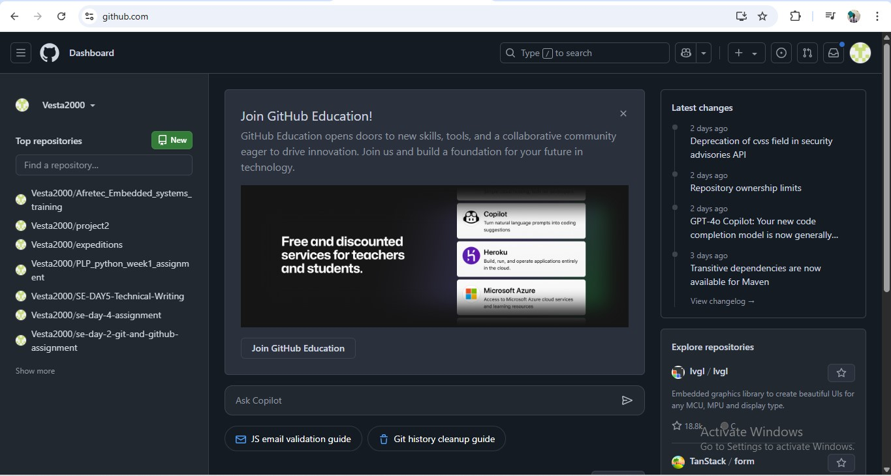
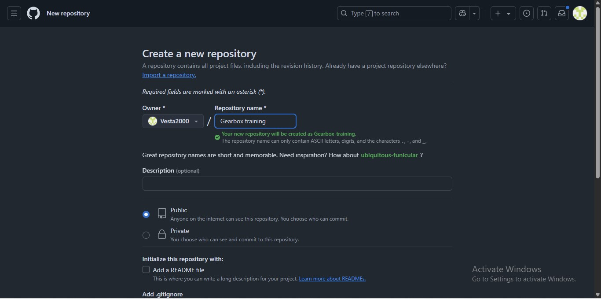
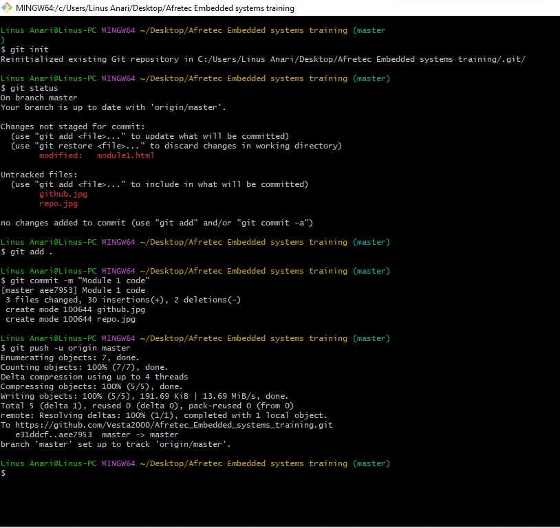
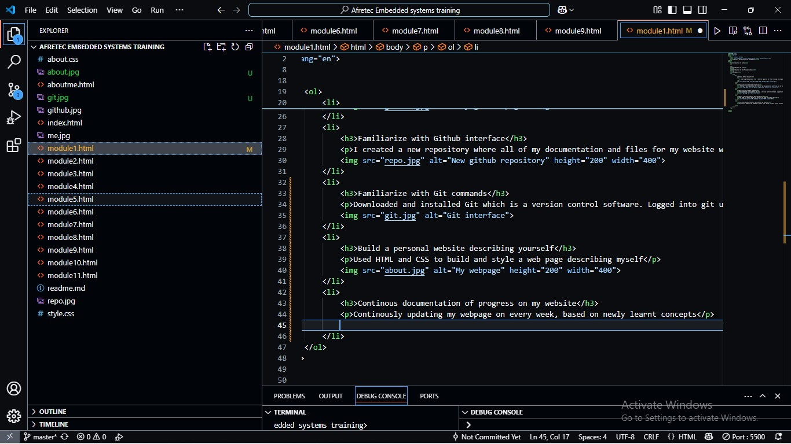

GitHub is like a big magic notebook where people who make computer programs can write their code, save it, and share it with others, kind of like how you draw pictures and keep them in a special folder, but this one is on the internet, and other people can help make your picture even better by adding colors or fixing mistakes without ruining your original drawing!
GitHub is important because it helps people who make computer programs keep their work safe, organize their code, and work together with others by making changes without losing or breaking anything.
Git is like a magic save button that remembers every change you make to your work, so if you make a mistake, you can go back to an earlier version instead of starting all over again.
Git is important because it helps people save their work, keep track of changes, and fix mistakes easily, so they don’t have to start over if something goes wrong, and they can also work with others without mixing things up.

Web pushing is a way for websites or web apps to send messages to your device even when you're not actively using them. These notifications pop up on your screen, like when you get a message or an update from an app, to keep you informed about important updates, reminders, or new content. They work through browsers and can be used on desktops and mobile devices.
I used my github account that I had set up prior to this training. I simply logged into the account.
I created a new repository where all of my documentation and files for my website will be stored
Downloaded and installed Git which is a version control software. Logged into git using my github user name and email, then pushed the files in my local environment to the github repository created earlier. Familiarized with git commands such as global config (to configure git using my username and email), git init(to initialize git), git add .(to add my files to git), git commit(to commit changes from the local environment) and git push(to push my files to github)
Used HTML and CSS to build and style a web page describing myself
Continously updating my webpage on every week, based on newly learnt concepts
